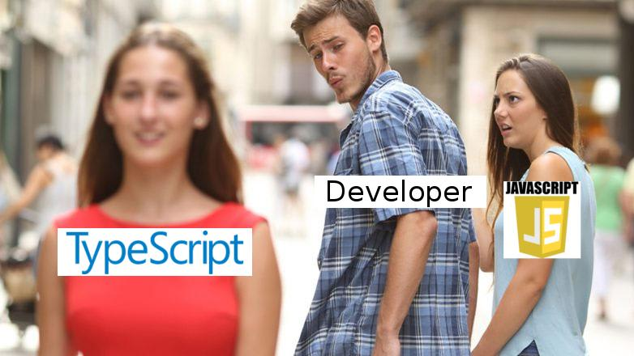
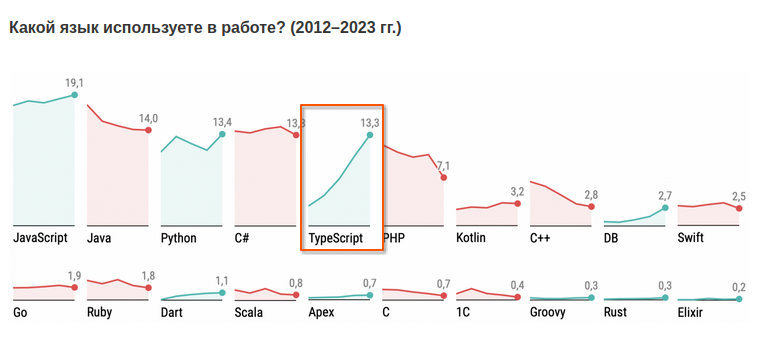
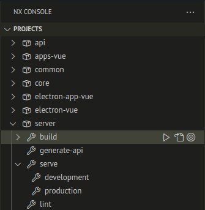
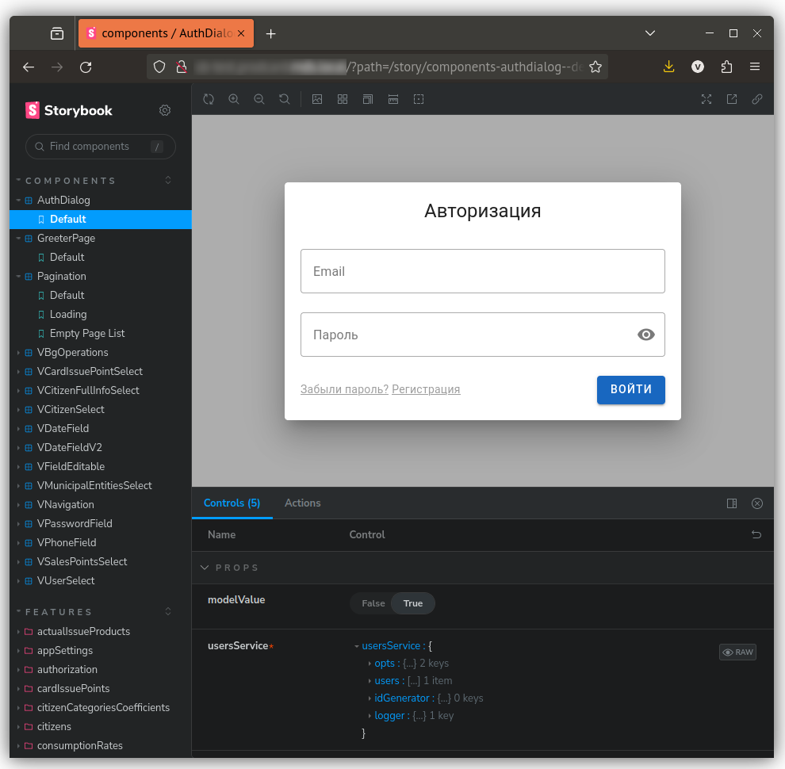
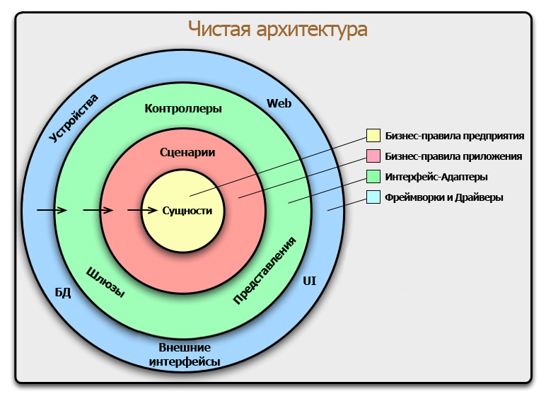

Что делать, когда нужен оффлайн?
О проекте
Требования
- WEB приложение
- Десктоп приложение
- Windows, Linux
- Операторы, модераторы, админы
- Оффлайн режим
- Синхронизация через флешку
Какие есть варианты?
Какие есть варианты?
- Писать нативно под все платформы
- Писать кроссплатформенно
Какие есть варианты?
- Писать нативно под все платформы
- Windows UWP+XAML
- Linux Qt/GTK
- Web Typescript+HTML+CSS
- Server Ruby, Go, Kotlin...
- Писать кроссплатформенно
Какие есть варианты?
- Писать нативно под все платформы
- Писать кроссплатформенно
- Qt
- Flutter
- Compose Multiplatform
- Typescript+HTML+CSS+ElectronJS
Побеждает
- Typescript+HTML+CSS+ElectronJS
Инструменты
Typescript


- Генераторы проектов различного типа
- Параллельное выполнение задач (сборка, линтинг, и т.д)
- Кэширование результатов сборки
- Расширяемость плагинами, кастомными генераторами
- Интеграция с IDE (VSCode, IDEA)


ElectronJS
- Chromium (front) и node.js (back) в одном флаконе
- Front и back общаются по IPC
- Поддерживается Windows, Linux, macOS
- electron-builder собирает AppImage и Windows-инсталлятор
- Для NX есть плагин
TypeORM
- Postgres, SQLite, MySql, Mongo, MsSql, Oracle
- Поддержка паттернов Data Mapper и Active Record
- Query Builder
- Миграции, транзакции, отношения, кэширования, lazy отношения, пул соединений...
Express.js
const express = require('express')
const app = express()
app.get('/', (req, res) => {
res.send('hello world')
})
+ OpenAPI + Swagger UI + 🚲
Express.js + OpenAPI + Swagger UI + 🚲
- Базовый класс контроллера
- Генерация кода контроллера
- Генерация кода клиента
- Контроллер для отображения Swagger UI
Vue 3 + Vuetify
- ➕ Поддержка TypeScript
- ➕ Material Design
- ➕ Много готовых компонентов
- ➕ Иконки
- ➖ Не идеально работает поддержка в VSCode
- ➖ Не везде работает типизация
- ➖ Нет компонентов календаря и выбора даты
Саша подтвердил что Vue 💩
Vue 3 + Vuetify
Storybook
- Изолированная разработка форм и компонентов
- Тестирование форм по отдельности
- Удобное отображение внутреннего состояния
- Список всех форм и компонетов
Storybook
Архитектура
Чистая архитектура
Уровень модели и сценариев. Интерфейсы
Уровень модели и сценариев. Реализация
Уровень контроллеров, шлюзов, представлений
Структура проекта
Синхронизация
Event sourcing
- ✅ Хранение исходных данных в виде цепочки событий
- ✅ Возможность вернуться к любому месту в истории
- ✅ Бесплатный журнал аудита
- ❌ Чтобы получить определенную или текущую версию объекта надо переисполнить события
💪 На помощь приходят проекции
События

Синхронизация

Шардирование